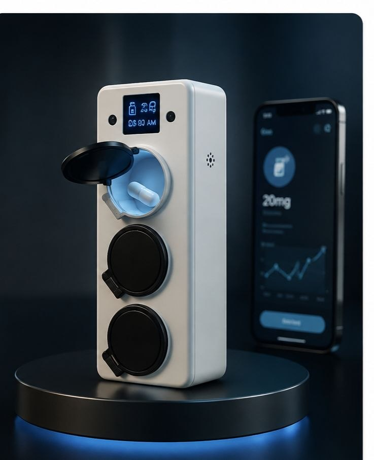

أجهزة هندسها هدف واحد: ألا تفشل أبدًا في التوزيع.
كل مادة، وحساس، ومحرك في سمارت دوز موجود لحماية وعد واحد — أن ترتفع الحجيرة الصحيحة، وهي فقط، وتُفتح في موعدها. الموثوقية هنا ليست ميزة إضافية. إنها جوهر الفكرة.

قطعة لطاولة المطبخ، لا جهازًا طبيًا.
صُمم سمارت دوز بحجم وتشطيب يسمحان له بالجلوس على طاولة المطبخ دون أن يُعلن عن نفسه. مواد دافئة غير لامعة تحل محل المظهر السريري الكئيب الذي تشترك فيه معظم أجهزة التوزيع الآلي في السوق — لأن الظهور كقطعة من نمط الحياة لا يقل أهمية عن العمل كواحدة منها.
شاهد التحوّل.
الجهاز المادي وحده، يتحول إلى النظام الكامل — حجيرات مغلقة، حساسات بيئية، علامة QR/AR، وتطبيق مرافق، كلها تعمل معًا.
تفضّل الصور الثابتة؟ إليك نفس التحول، لقطة بلقطة.

الانحشار هو الشكوى الأكثر شيوعًا في هذه الفئة. بنينا الحل ضدها أولًا.
تجمع المراجعات المستقلة ومجتمعات مقدمي الرعاية على ذكر العطل ذاته في أجهزة التوزيع الآلي: أدراج يصعب تحميلها وآليات تنحشر بالضبط حين تكون الحاجة إليها في أوجها. آلية حجيرات سمارت دوز صُممت واختُبرت خصيصًا ضد نمط العطل هذا منذ اليوم الأول — لا كإصلاح لاحق بعد الإطلاق.
كل مكوّن، ولماذا هو موجود.
| المكوّن | الغرض | ملاحظة تصميمية |
|---|---|---|
| آلية الحجيرة المحرَّكة | ترفع الحجيرة المجدولة وتفتحها فعليًا | اختُبرت خصيصًا ضد أعطال الانحشار المبلَّغ عنها في أجهزة المنافسين |
| هيكل الحجيرة المغلقة | يمنع الوصول إلى دواء غير مجدول | مقاوم للعبث، وآمن للأطفال |
| حساسات الحرارة والرطوبة | تحمي فعالية الدواء | تُطلق تنبيهات على الجهاز والتطبيق عند تغيّر الظروف |
| شاشة لمسية | حالة وتأكيد على الجهاز نفسه | أزرار لمس كبيرة وتباين عالٍ لضعاف البصر |
| وحدة Wi-Fi | مزامنة التطبيق، مراقبة عن بُعد، تحديثات لاسلكية | خيار اتصال خلوي احتياطي قيد الدراسة للمنازل ضعيفة التغطية |
| كاميرا / ماسح QR | يشغّل طبقة معلومات الدواء بالواقع المعزز | اختياري بالكامل — لا يُشترط أبدًا للتوزيع الأساسي |
| بطارية احتياطية | تحافظ على دقة الجدول أثناء انقطاع الكهرباء | تعالج مباشرة مخاوف موثوقية شائعة |
| قفل برمز مرور | يقيّد الوصول ويحدد سقف الجرعات | قابل للتخصيص لكل أسرة |
| تنبيه صوتي | إتاحة للمستخدمين ضعاف البصر أو عند غياب الهاتف | مكمّل، لا بديل، لإشارة الارتفاع الفعلية |
كل قرار يعود إلى أحد هذه المبادئ.
مظهر جهاز منزلي ذكي
لا جهازًا طبيًا. المساحة المتاحة في هذه الفئة هي تصميم إلكترونيات استهلاكية راقٍ يُطبَّق على منتج صحي.
لحظة التوزيع هي البطلة
كل قرار تصميمي يجب أن يجعل تناول الدواء يبدو بسيطًا وواضحًا وهادئًا.
تغذية راجعة احتياطية، لا معتمدة على قناة واحدة
الإشارات المادية والصوتية والرقمية تعمل كل منها باستقلالية — لا نقطة فشل واحدة لمعرفة أن الوقت قد حان.
إتاحة افتراضية
أزرار لمس كبيرة، وتباين عالٍ، ولغة بسيطة هي الأساس — لا إعدادًا إضافيًا.
تعقيد اختياري
الواقع المعزز، والذكاء الاصطناعي، ولوحات المعلومات المتقدمة تُضاف فوق تجربة أساسية تعمل بلا أي إعداد سوى تحميل الحبوب وضبط الجدول.
الثقة مصمَّمة، لا مُدَّعاة
التسعير، والإلغاء، واستخدام البيانات، والموثوقية — كلها مُثبتة في المنتج نفسه، لا مجرد تأكيدات في صفحة أسئلة شائعة.
اطّلع على كامل المزايا.
من الحجيرات المغلقة إلى الرؤى المدفوعة بالذكاء الاصطناعي — استكشف كل ما يقدمه سمارت دوز.